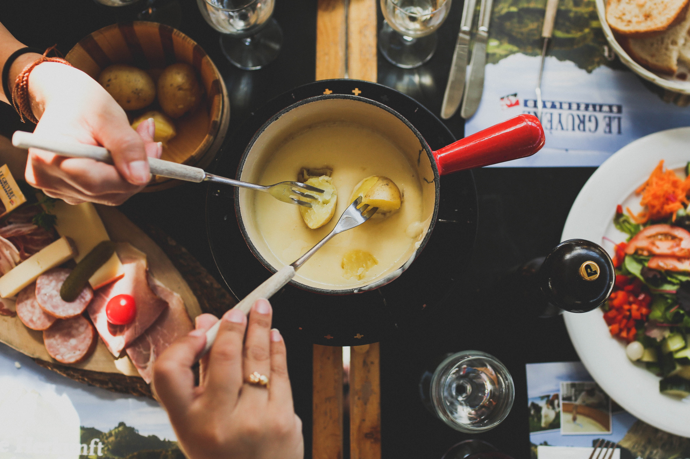

Fondue Recipe

Cheese fondue is a fun and social dining experience. Remember to keep the fondue warm throughout your meal, and feel free to get creative with dippers like boiled potatoes, steamed vegetables, or apples in addition to the traditional bread cubes.
Ingredients
- 1 clove of garlic, halved
- 1 cup (240 ml) dry white wine
- 1 tablespoon lemon juice
- 1/2 pound (225g) Gruyère cheese, grated
- 1/2 pound (225g) Emmental cheese, grated
- 2 tablespoons all-purpose flour
- A pinch of freshly grated nutmeg
- A pinch of white pepper
- 1 French baguette, cut into bite-sized cubes
- Kirsch (cherry brandy) for optional flavor (about 1-2 tablespoons)
Steps
- Prepare the Fondue Pot: Cook the lasagna noodles in a large pot of salted boiling water until they are al dente, according to the package instructions. Drain and set them aside.
- Heat the Wine: In a skillet, brown the ground beef over medium heat until it's no longer pink. Drain any excess fat.
- Gradually Add Cheese: In a 9x13-inch baking dish, spread a thin layer of tomato sauce on the bottom. Place three cooked lasagna noodles on top. Add half of the browned beef, followed by half of the ricotta cheese and half of the mozzarella cheese. Repeat with another layer of noodles, the remaining beef, ricotta cheese, and mozzarella cheese. Finish with a final layer of noodles and cover with the remaining tomato sauce. Sprinkle extra mozzarella cheese on top if desired.
- Mix Flour and Seasoning: Preheat your oven to 375°F (190°C). Cover the baking dish with aluminum foil and bake for 25-30 minutes, then remove the foil and bake for an additional 10-15 minutes, or until the lasagna is hot and bubbly, and the cheese is golden and melted.
- Optional: Add Kirsch: Let the lasagna rest for a few minutes before slicing into it. This allows the layers to set and makes it easier to serve. Enjoy your delicious homemade beef lasagna!
- Serve: Let the lasagna rest for a few minutes before slicing into it. This allows the layers to set and makes it easier to serve. Enjoy your delicious homemade beef lasagna!
- Dip and Enjoy: Let the lasagna rest for a few minutes before slicing into it. This allows the layers to set and makes it easier to serve. Enjoy your delicious homemade beef lasagna!